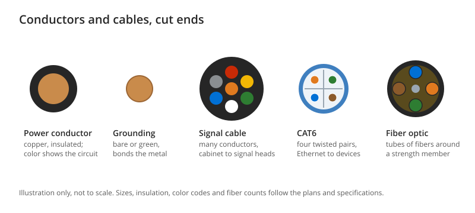

Conductors and cables
In one sentence: conductors carry power, and cables carry signals and data; both are pulled through the conduit and terminated in cabinets and devices.

Power conductors
Copper conductors sized and insulated as the specifications and conductor schedule require, from the service to the cabinets and devices. Color coding follows the specifications.
Grounding conductors
Bare or insulated conductors that bond equipment, poles and boxes to the grounding system. See Grounding and bonding.
Signal and communication cables
- Signal cable (multi-conductor) from the controller cabinet to signal heads. See Traffic signals.
- Detector lead-in cable from loops or sensors to the cabinet. See Vehicle detection.
- CAT6 and control cables for network devices.
- Fiber optic cable. See Fiber optic communications.
Installation notes
- Pull only after the conduit is proven clear. See Phase 5: Cable installation.
- Respect pulling tension and bend radius; use lubricant made for cable.
- Splice only where allowed, with the splice method specified.
- Label at both ends and in pull boxes. See Labeling and identification.
- Test insulation before energizing. See Electrical testing.
PM notes
Keep the reel tags and certifications for the submittal and closeout records.
Common mistakes / what Caltrans actually checks
- Splicing in a location the specifications do not allow.
- Wrong color coding.
- Energizing before insulation tests.